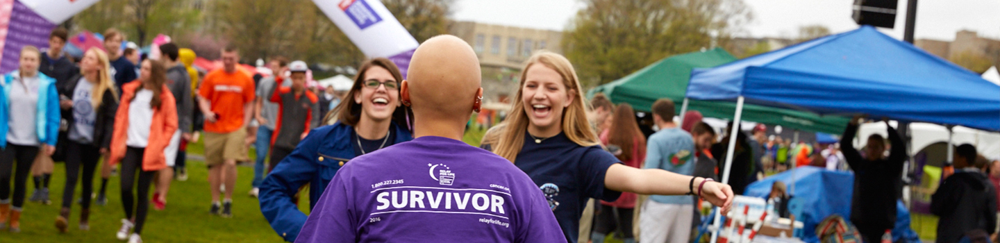

Our Purpose
Relay For Life is the signature fundraiser for the American Cancer Society. Relay is staffed and coordinated by volunteers in more than 5,200 communities and 27 countries. Volunteers give of their time and effort because they believe it's time to take action against cancer.
Join us at these events to bring communities together to remember loved ones lost, honor survivors of all cancers, and raise money to help the American Cancer Society make a global impact on cancer.